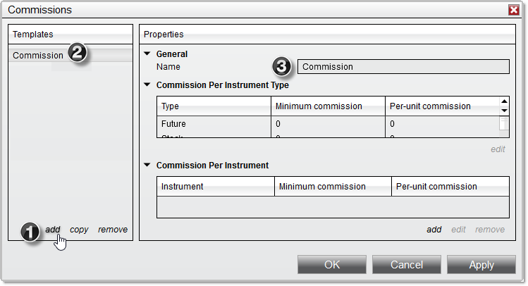

|
<< Click to Display Table of Contents >> Working With Commission Templates |


|
Working With Commission Templates
|
<< Click to Display Table of Contents >> Working With Commission Templates |
|
The Commissions window allows you to create and manage Commission Templates to be applied to different trading accounts configured in NinjaTrader. These templates can be used to set minimum and per-unit commissions for all instruments of a certain type, or to set specific commissions for individual instruments, which will override any commissions set for the instrument type.
Adding Commission Templates The Commissions window includes several pre-built Commission Templates, based on the currently available NinjaTrader software license types. Additional templates can be set up by clicking the add button at the bottom of the "Templates" section of the window. A new template will be created with a default name, and specific commissions can then be saved for the template using the steps in the sections below.
Once a new template has been added, you can edit it's name by selecting it in the list in the "Templates" section, then entering a name in the "Name" field within the "Properties" section.

1) The add button is clicked
2) A new template with a default name is added to the list
3) The template name can be changed in the "Properties" section
Copying Commission Templates There may be an instance in which you need to maintain two copies of a Commission Template with a few small differences between the two. Rather than creating a second version from scratch, you can copy an existing template in the Commissions window, then make any needed changes to the new copy. To do this, first select a template in the list of configured templates, then click the copy button. A new copy will appear in the list, allowing you to make any necessary changes.
Removing Commission Templates To remove a Commission Template, first select one in the list of configured templates, then click the remove button. |
 Managing commissions per instrument type
Managing commissions per instrument type
Adding Commissions Per Instrument Type To add a commission for an entire asset class (instrument type), first select an asset class listed in the "Commission Per Instrument Type" grid, then click the edit button. Alternatively, you can double-click on any row in the grid to open the Edit Commissions dialogue. Enter a value in the "Minimum Commission" field, the "Per-Unit Commission" field, or both, then click OK.
|
 Managing instrument-specific commissions
Managing instrument-specific commissions
Adding Instrument-Specific Commissions To add commissions for specific instruments, first click the add button below the "Commission Per Instrument" section to open the Edit Commission window. Select an instrument in the "Instrument" dropdown menu, or click the magnifying glass icon to search available instruments. Enter a value in the "Minimum Commission" field, the "Per-Unit Commission" field, or both, then click OK.
Editing Instrument-Specific CommissionsTo edit an instrument-specific commission, first select it in the list of instrument-specific commissions for your chosen Commission Template, then click the edit button. You can then follow the process outlined above to change the instrument or commission values.
Removing Instrument-Specific CommissionsTo remove an instrument-specific commission, first select it in the list of instrument-specific commissions for your chosen Commission Template, then click the remove button.
1) The edit button can be used to edit an existing instrument-specific commission.
2) The remove button can be used to remove an instrument-specific commission. |